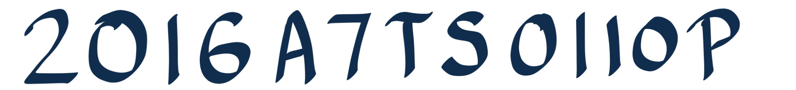

Hi there!
I am an incoming graduate student at the Georgia Institute of Technology! Earlier, I was a
software engineer at Cisco Systems, Bengaluru.
I was
brought up in the historic city of Pune, erstwhile Poona, a bustling
metro in Maharashtra, India.
I love meddling with all things Computer Science, distributed systems,
Chess, and Football!
Education and Experiences
Click on the logos for pictures!
Master's in Computer Science @ Georgia Tech
[August 2021 - Present]
Here's to new beginnings! I have been admitted to Georgia Institute of Technology in Atlanta, United States for my MS degree in Computer Science. I intend to do a specialization in Computing Systems and will begin term in Fall of 2021. Looking forward to life at Tech, and to see where it takes me!

Software Engineer, Cloud and Network Security @ Cisco
[August 2020 - May 2021]
I was a software engineer at Cisco Systems, where I worked on the Intrusion Prevention System Snort3 and interacted daily with an extraordinarily knowledgable and helpful group of people!

Research Intern, School of Computing, NUS Singapore
[January 2020 - June
2020]
I conducted my undergraduate thesis on detecting data center faults using network visualization
at the Systems and Networking group under Professor Chan Mun Choon. Singapore is a fantastic place,
and my only regret is getting just a little over 2 months to explore it before CoViD struck 🙁 .
Here's a link to the GitHub
repository that documents my work!
Engineering Intern, Cloud and Network Security @ Cisco
[May 2019 - July 2019]
I worked on Firewall health monitoring and alerts as an intern in Summer 2019! I am extremely proud that my work went into production with Health and Monitoring now a feature of Cisco's Next-Gen Firewalls. It was a bittersweet summer as Arsenal lost the Europa League final. Still, Cisco and Bengaluru were brilliant to me, and I converted my internship into a full-time offer!

Undergrad in Computer Science @ BITS Pilani
[August 2016 - July 2020]
I spent 4 memorable years at Birla
Institute of Technology and Science, a premier engineering college
in picturesque Pilani! At BITS, I was the coordinator of the Department of
Stage Controls, a body responsible for planning and logistics of Auditorium events during Oasis.
I was also a member of ACM, BITS Pilani chapter, and the college football team.
A few lines are not enough to show my gratitude, but I came here looking for Copper, and I found Gold.

My BITS ID!
12 years at The Bishop's School, Pune
[June 2002 - May 2014]
I did my class X ICSE at Bishop's, a school steeped in tradition in the beautiful Army Cantonment
area of Pune. I was a member of the Harding House and the school football teams.
Bishop's, along with BITS, has had the biggest contribution in shaping me into who I am today.
Here's my speech from our
graduation and farewell ceremony in February 2014.